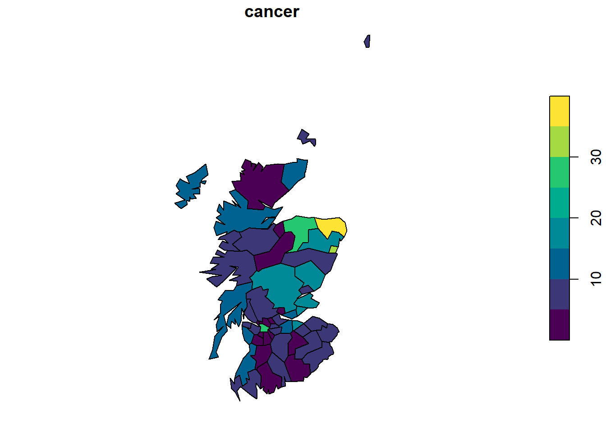
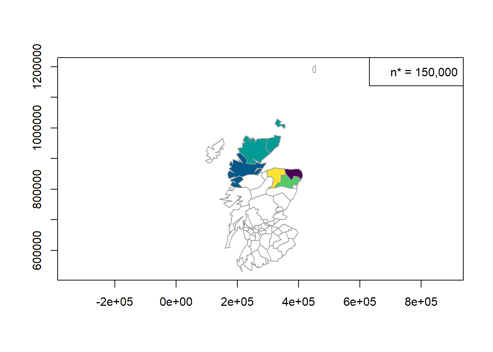
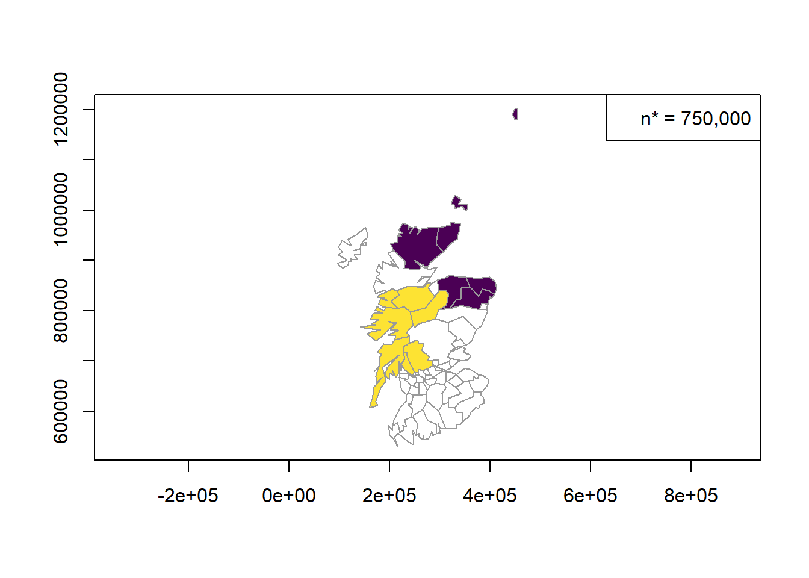
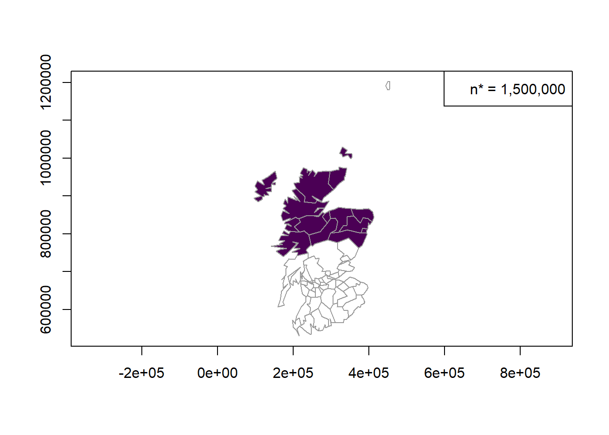
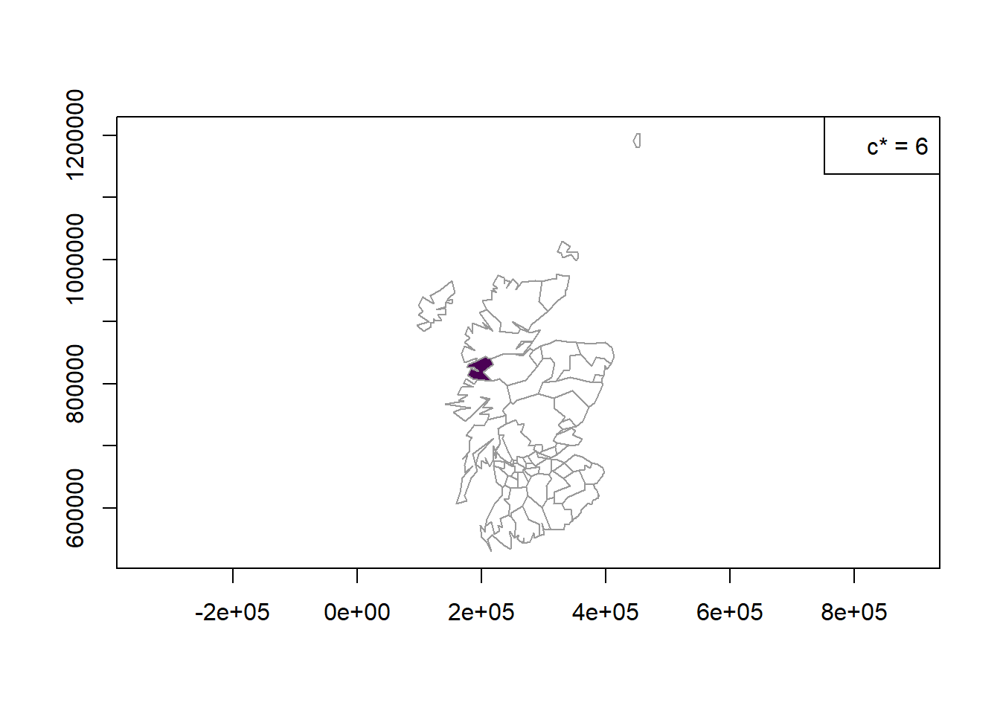
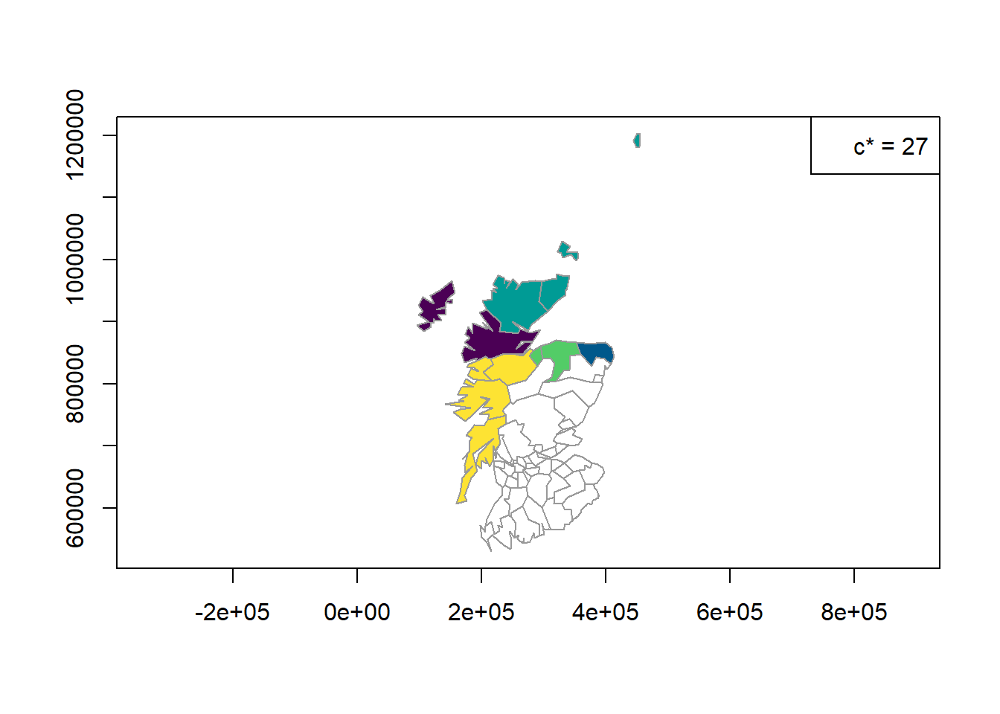
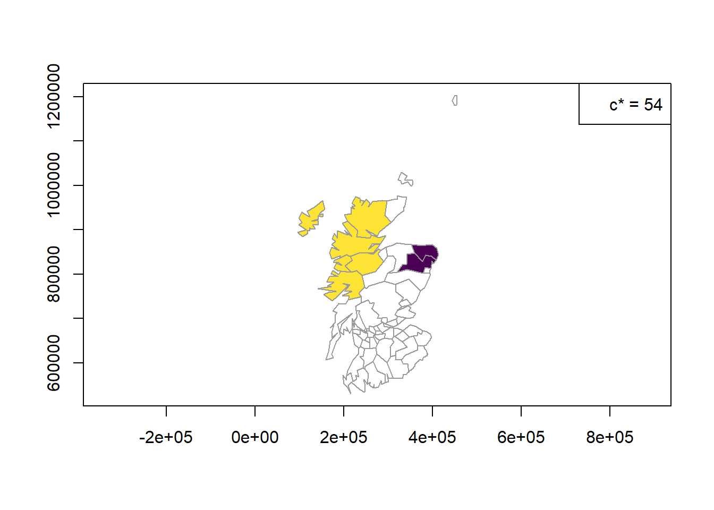
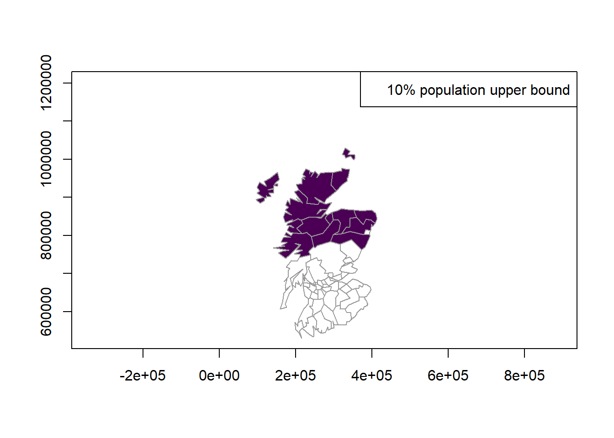

load("scotlip_sf.rda")Hw05 - Regional Count Data Homework (Local Rates)
The scotlip_sf is an sf data frame with 56 rows representing counties and 5 variables. The data frame contains 56 county-level observations for lip cancer among males in Scotland between 1975-1980. The variables are:
name: county namecancer: number of Lip cancer cases in the county (Cressie 1993)population: county population size (Cressie 1993)expected: expected number of lip cancer cases (Lawson 1999)geometry: geometric representation of counties in Scotland.
Source Kemp I., Boyle P., Smans M. and Muir C. (1985) Atlas of cancer in Scotland, 1975-1980, incidence and epidemiologic perspective. International Agency for Research on Cancer. 72
Cressie, N. A. C. (1993). Statistics for Spatial Data. New York: John Wiley & Sons, p. 537 Table 7.2.
Lawson, A., Biggeri, A., Böhning, D., Lesaffre, E., Viel, J. F., & Bertollini, R. (Eds.). (1999). Disease Mapping and Risk Assessment for Public Health. New York: Wiley, pp. 68-69, Table 5.1.
We run the following command to load scotlip_sf (assuming the .rda is in your search path).
We run the following command to geometrically obtain centroids for each county.
coords <- st_coordinates(st_centroid(st_geometry(scotlip_sf)))Problem 1
Create choropleth maps (a plot that colors each region with a value indicating the response level) of the cases and expected variables.
Solution
plot(scotlip_sf["cancer"], pal = hcl.colors)
Problem 2
Based on the observed and expected patterns in the plots, what do you conclude about possible clusters of lip cancer cases in Scotland?
Solution It looks like we have some clustering in the top right corner or at least the risk there is higher than for the southern parts of Scotland. However, that is also where a majority of the population is in this part of Scottland with edingburg being there so it makes sense somewhat.
Problem 3
In this problem, we will use the CEPP method to identify potential clusters of the cancer variable using a significance level of \(\alpha=0.01\).
(a)
State the null and alternative hypothesis test in the context of the problem for a generic \(n^*\).
Solution
The null hypothesis is there is no window with n* persons at risk that has significantly more cases of lip cancer than what is expected under the constant risk hypothesis
The alternative hypothesis is that there is at least one window with n* persons at risk that has significantly more cases of lip cancer than what is expected under the constant risk hypothesis.
(b)
Apply the CEPP test to the cancer variable using \(n^*=150,000\), \(n^*=750,000\), and \(n^*=1,500,000\) (approximately 1%, 5%, and 10% of the total population)
Solution
cepp150000 = cepp.test(coords = coords,
cases = scotlip_sf$cancer,
pop = scotlip_sf$population,
nstar = 150000,
alpha = .01)
summary(cepp150000) nregions max_dist cases ex rr stat p
1 1 0.0 25.28778 5.4 4.9 25.3 0.002
2 2 51482.2 21.58668 5.4 4.1 21.6 0.002
3 3 119046.9 20.81378 5.4 4.0 20.8 0.002
4 1 0.0 18.12098 5.4 3.5 18.1 0.004
5 1 0.0 15.88511 5.4 3.0 15.9 0.004clusters(cepp150000)[[1]]
[1] 2
[[2]]
[1] 5 1
[[3]]
[1] 6 3 12
[[4]]
[1] 10
[[5]]
[1] 7cepp750000 = cepp.test(coords = coords,
cases = scotlip_sf$cancer,
pop = scotlip_sf$population,
nstar = 750000,
alpha = .01)
summary(cepp750000) nregions max_dist cases ex rr stat p
1 7 377033.6 100.42599 26.8 4.4 100.4 0.002
2 7 139675.0 46.26136 26.8 1.8 46.3 0.006clusters(cepp750000)[[1]]
[1] 8 6 3 12 2 7 10
[[2]]
[1] 9 1 19 23 17 34 39cepp1500000 = cepp.test(coords = coords,
cases = scotlip_sf$cancer,
pop = scotlip_sf$population,
nstar = 1500000,
alpha = .01)
summary(cepp1500000) nregions max_dist cases ex rr stat p
1 15 286366.7 177.5568 53.7 4.5 177.6 0.002clusters(cepp1500000)[[1]]
[1] 12 3 5 13 19 7 1 6 17 11 2 10 9 16 22(c)
Interpret the overall results from the tests in (b) in the context of the problem.
Solution
At all the n* tested we found at least one region where we found some sort of clustering. This is due to us having more actual cases than expected under the population distbrution.When the population radii is at 150000 we notice different regions fall under this with for example region one having 26 cases when the expected amount of cases is only 5. One of the big indicators happens at spatial population radi of 1,500,000 where we see that under this the cases is 177 when the expected is only 53.7 on top of this we also see a low p value thus, for the null hypothesis we can reject it and say that at three different poupaltion radii there exists some window where we see more cases than expected under constant risk hypothesis.
(d)
Plot the results on the map of Scotland counties. Look at the overarching patterns of the plots. Are the clusters in roughly the same areas? Explain.
Solution
plot(sf::st_geometry(scotlip_sf), border = "grey60", axes = TRUE,
col = color.clusters(cepp150000))
legend("topright", legend = c("n* = 150,000"))
plot(sf::st_geometry(scotlip_sf), border = "grey60", axes = TRUE,
col = color.clusters(cepp750000))
legend("topright", legend = c("n* = 750,000"))
plot(sf::st_geometry(scotlip_sf), border = "grey60", axes = TRUE,
col = color.clusters(cepp1500000))
legend("topright", legend = c("n* = 1,500,000"))
In the plots, we can see that there seems to always be some window in Edinburgh where there is a cluster identified and it makes sense since this is the highest population density area. In general we also always see the northern areas covered either with smaller n* sizes or even with the large n* size.
Problem 4
In this problem, we will use the Besag-Newell method to identify potential clusters of the cancer variable using a significance level of \(\alpha=0.01\).
(a)
State the null and alternative hypothesis test in the context of the problem for a generic \(c^*\).
Solution
The null hypothesis that the most compact window including at least c* number of lip cancer cases is not significant more compact than expected under the constant risk hypothesis
The alternative hypothesis is that the most compact window with at least c* cases of lip cancer is significant more compact than what is expected under the constant risk hypothesis.
(b)
Apply the Besag-Newell test to the cancer variable using \(c^*=6\), \(c^*=27\), and \(c^*=54\) (approximately 1%, 5%, and 10% of the total lip cancer cases).
bn6 = bn.test(coords = coords,
cases = scotlip_sf$cancer,
pop = scotlip_sf$population,
cstar = 6,
alpha = .01)
summary(bn6) nregions max_dist cases ex rr stat p
1 1 0 9 1 9 1 0.0006366036clusters(bn6)[[1]]
[1] 1bn27 = bn.test(coords = coords,
cases = scotlip_sf$cancer,
pop = scotlip_sf$population,
cstar = 27,
alpha = .01)
summary(bn27) nregions max_dist cases ex rr stat p
1 2 110357.8 28 7.8 3.7 2 5.839645e-08
2 1 0.0 39 8.3 5.0 1 2.000716e-07
3 4 328224.3 31 8.5 3.8 4 3.049038e-07
4 2 36749.0 29 9.8 3.1 2 4.799240e-06
5 4 139675.0 35 15.8 2.3 4 6.327843e-03clusters(bn27)[[1]]
[1] 11 5
[[2]]
[1] 2
[[3]]
[1] 8 6 3 12
[[4]]
[1] 7 13
[[5]]
[1] 9 1 19 23bn54 = bn.test(coords = coords,
cases = scotlip_sf$cancer,
pop = scotlip_sf$population,
cstar = 54,
alpha = .01)
summary(bn54) nregions max_dist cases ex rr stat p
1 2 32806.3 59 14.2 4.5 2 6.662304e-16
2 6 167742.2 57 18.1 3.4 6 6.838165e-12clusters(bn54)[[1]]
[1] 2 10
[[2]]
[1] 11 5 1 12 19 9(c)
Interpret the overall results from the tests in (b) in the context of the problem.
Solution
We again see region 1 make an appearance where we reject the null hypothesis for it at almost every spacial scale. With us having at least one region in every scale we could reject the null hypothesis that at scales of us including cases of 6 27 54 per region we see some of these be more compact than expected under CRH. Thus, we could conclude that region 1 is not sensitive to just selection of our c* and has stronger evidence to reject the null hypothesis at least in that reagon where we see evidence of spatial clustering of lip cancer.
(d)
Plot the results on the map of Scotland counties. Look at the overarching patterns of the plots. Are the clusters in roughly the same areas? Explain.
Solution
plot(sf::st_geometry(scotlip_sf), border = "grey60", axes = TRUE,
col = color.clusters(bn6))
legend("topright", legend = c("c* = 6"))
plot(sf::st_geometry(scotlip_sf), border = "grey60", axes = TRUE,
col = color.clusters(bn27))
legend("topright", legend = c("c* = 27"))
plot(sf::st_geometry(scotlip_sf), border = "grey60", axes = TRUE,
col = color.clusters(bn54))
legend("topright", legend = c("c* = 54"))
Yes, except for the c=6 where the one cluster is to the west instead of the east as it has been in both the other c or the CEEP. However, otherwise we still see that one included with the addition of the high populations areas of Edinburgh. But, with this test we do seem to be focusing more on the west than the east area.
Problem 5
Use the Poisson spatial scan test under the CRH to identify potential clusters for the cancer variable. Use a significance level of 0.01.
(a)
State the null and alternative hypotheses in the context of the problem.
Solution
The null hypothesis is the most likely cluster of cases of lip cancer within the local rate compared to the outside of the cluster rate is consistent with what is expected under the CRH.
The alternative is that the most likely cluster of cases of lip cancer within local rates compared to the outside the cluster rates is more extreme than what is expected under the CRH
(b)
Apply the spatial scan test to the cancer variable using using a population upperbound of 10% of the total population. Use the expected variable for the expected number of cases.
First we need to identify the expected under CRH
cases = floor(scotlip_sf$cancer)
population = scotlip_sf$population
e = sum(cases)/sum(population) * populationscan = scan.test(coords = coords,
cases = cases,
pop = population,
ex = e,
nsim = 999,
ubpop = 0.10,
alpha = 0.01,
type = "poisson")computing statistics for simulated data:summary(scan) nregions max_dist cases ex rr stat p
1 14 272873 175 52 4.5 106.7 0.001clusters(scan) [[1]]
[1] 12 3 5 13 19 7 1 6 17 11 2 10 9 16(c)
Interpret the overall results in the context of the problem.
Solution
In this case we have the same region of Edinburgh pop up as significant cluster there. Thus we could say in these two regions scanned by the method we reject the null hypothesis that the most likely cluster of cases of lip cancer is more extreme in these regions than what is usually expected under the constant risk hypothesis. Thus it seems like even when accounting for population density inside our scan area we still have some sort of clustering. Where for example in the first scan with 14 regions we saw a number of cases be 175 when the expected was only 52 with a relative risk of 4.5, where the Monte carlo p value is extremely significant. Thus we see some spatial clustering.
(d)
Plot the results on the map of Scotland counties.
Solution
plot(sf::st_geometry(scotlip_sf), border = "grey60", axes = TRUE,
col = color.clusters(scan))
legend("topright", legend = c("10% population upper bound"))
Problem 6
How do the plots for the CEPP, Besag-Newell, and scan methods compare to one another? Are the results consistent? How large do you think the true cluster might be?
Solution
So now that we have all the plots for all the different scan methods, I see a strong pattern of all of them involving at least Edinburgh; however, depending on the method some of them will scan areas to the west and some will scan the whole northern region of Scotland, which ends up being a huge part of our whole study area. Thus, it seems like due to this lack of inconsistency in size but not location of the cluster, I would say it has to be a clustering in Edinburgh and the surrounding areas but not to the point where it is the whole northern region of Scotland.